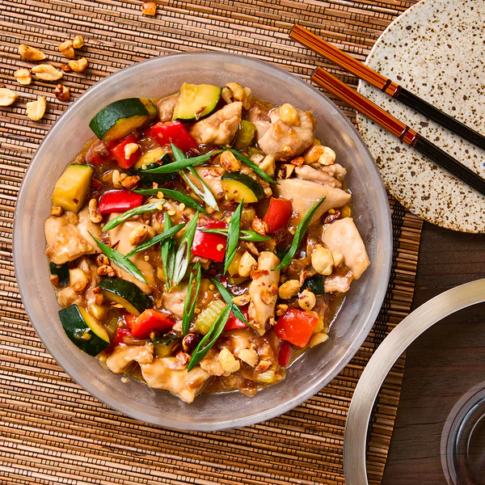

Serving Size:Serves 4
Prep Time:
20 min
Cook Time:
20 min
Total Time:
40 min
Ingredients:
• 500g chicken thighs, diced
• 1 cup peanuts
• 2 green onions, chopped
• 3 cloves garlic, minced
• 1 inch ginger, minced
• 6-8 dried red chilies
• 2 tbsp soy sauce
• 1 tbsp dark soy sauce
• 1 tbsp Chinese black vinegar
• 1 tbsp cornstarch
• 1 tsp Sichuan peppercorns
• 2 tbsp vegetable oil
• 1 tsp sugar
• 1/2 tsp salt
`,
`
Instructions:
1. Marinate chicken with soy sauce, cornstarch, and a pinch of salt for 10 min.
2. Toast peanuts until golden, set aside.
3. Heat oil in wok until smoking.
4. Stir-fry dried chilies and Sichuan peppercorns until fragrant.
5. Add chicken, stir-fry until golden.
6. Add garlic and ginger, cook 1 min.
7. Add dark soy sauce, vinegar, sugar, and salt.
8. Toss in peanuts and green onions.
9. Serve hot with steamed rice.`)">
Kung Pao Chicken